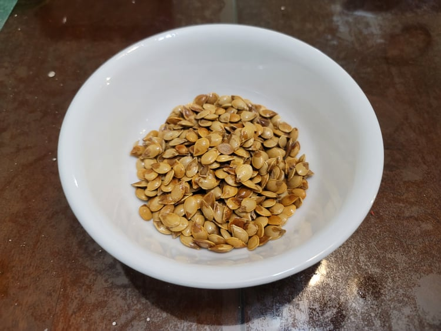

Roasted Squash Seeds

Ingredients:
- Squash seeds
- Water, as needed
- Salt, as needed
- Oil, as needed
Instructions:
- Preheat an oven to 400 degrees Fahrenheit.
- Place the seeds, water, and salt into a sauce pan. Add 2 cups of water and 1 tablespoon of salt to the pan for every half cup of pumpkin seeds. Bring to a boil and then reduce to a simmer. Let simmer for 10 minutes and then remove from heat.
- Strain the seeds from the water. Lay onto towels in a single layer and let dry completely.
- Place the seeds into a large bowl with enough oil to lightly coat and salt to taste. Toss until the seeds are completely coated.
- Spread onto a baking sheet and bake for 10-25 minutes, depending on the size of the seeds. Shake the pan every 5 minutes. They are done when they are crunchy.